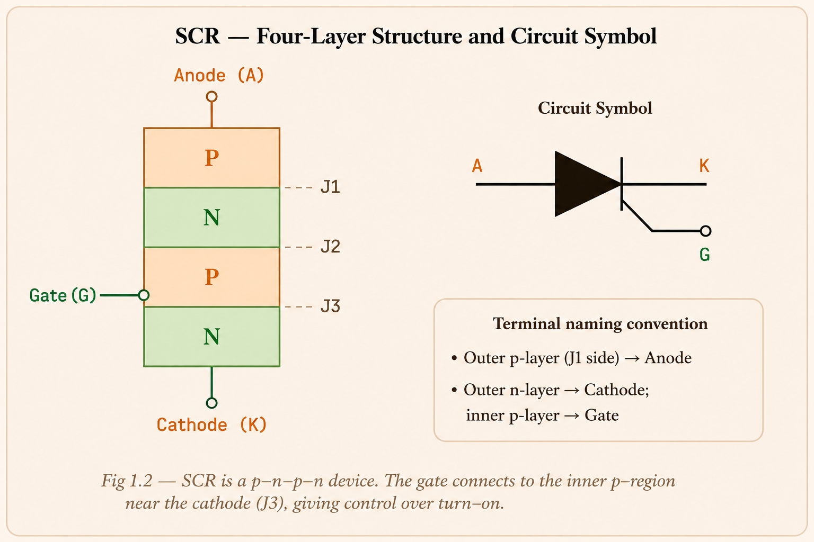
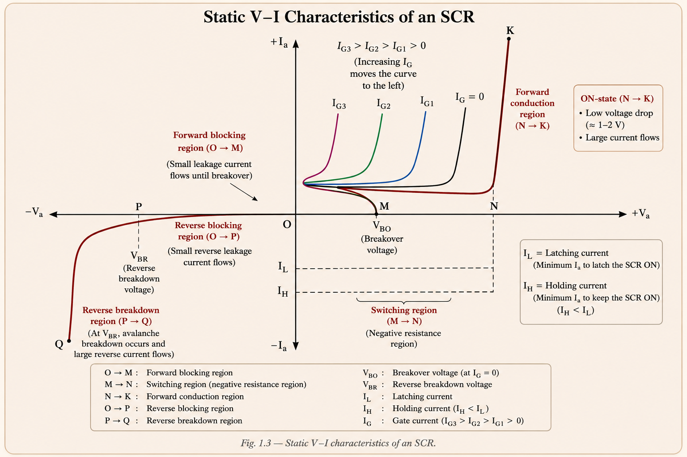
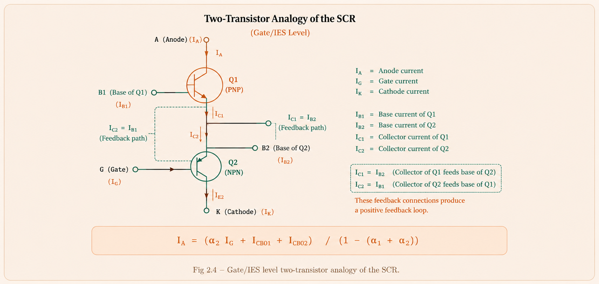
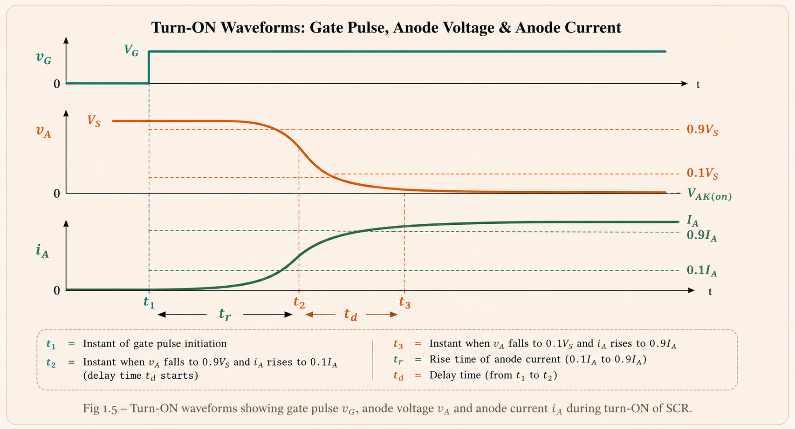
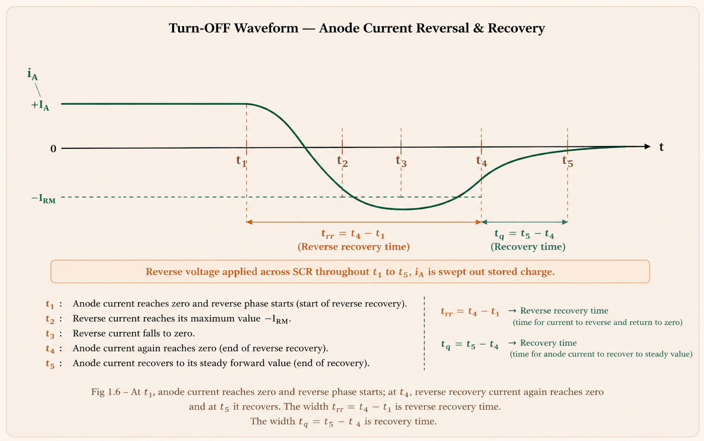
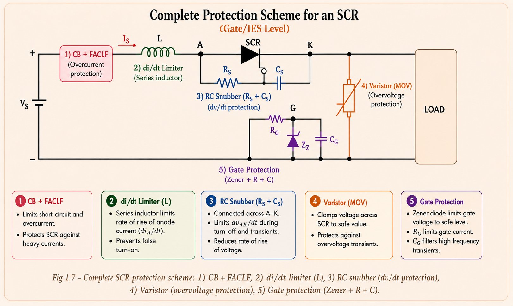
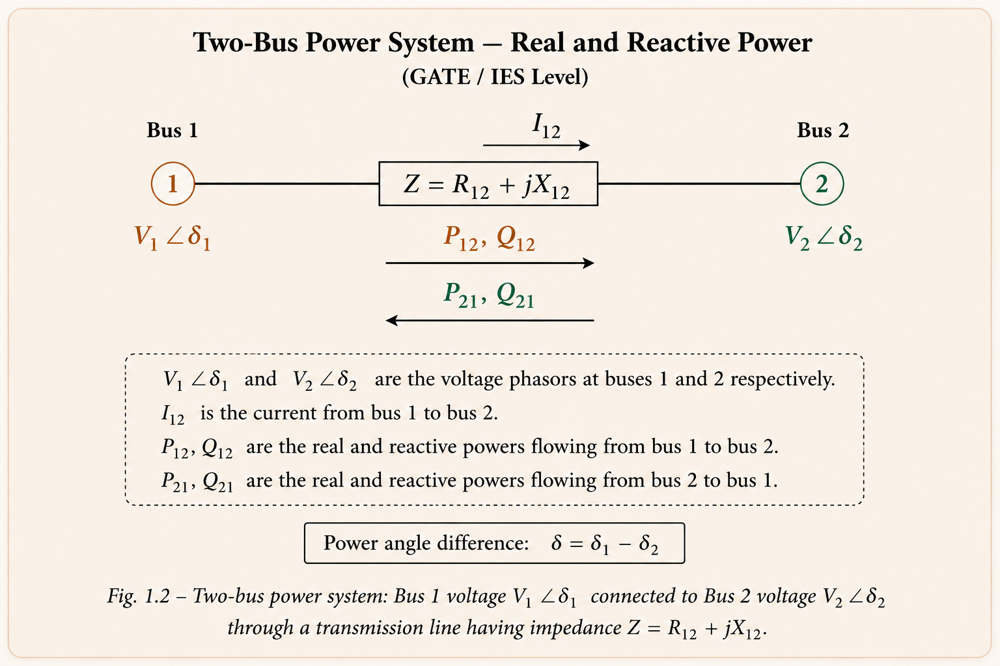
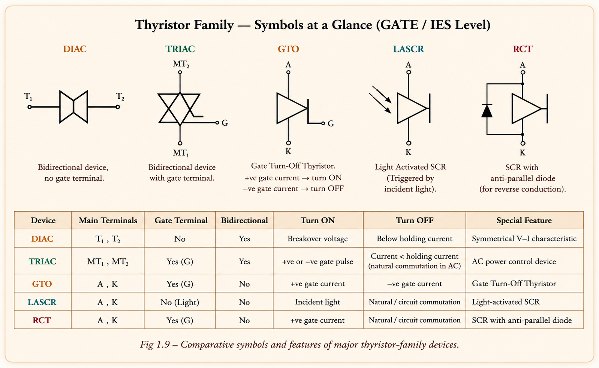

The thyristor family, static V-I characteristics, two-transistor analogy, switching (turn-on/turn-off) dynamics, gate triggering, di/dt & dv/dt protection, snubber design, thermal management, series/parallel SCR operation, and a complete tour of the thyristor family — TRIAC, GTO, DIAC, MCT and more — with full derivations, original solved problems, and GATE/IES exam concepts.
Every modern electrical system — from a mobile phone charger to an HVDC converter station carrying thousands of megawatts — needs a way to control the flow of electrical power with minimum loss. Mechanical switches (relays, contactors) are slow, wear out, and cannot switch fast enough for modern control. Power semiconductor devices solve this problem: they act as electronically controlled switches that can turn ON and OFF in microseconds, handle thousands of volts and amperes, and dissipate very little power while doing so.
Power electronics is the bridge between the "raw" electrical supply (AC mains, batteries, solar panels) and the "processed" power that loads actually need (variable-frequency drives, DC motor speed control, HVDC links, UPS systems, EV chargers, SMPS). Every converter — rectifier, inverter, chopper, cycloconverter — is built from these basic switching devices.
An ideal switch has zero voltage drop when ON, carries any current, blocks any voltage when OFF, and switches instantly with zero loss. Real devices approach this ideal but differ in: forward voltage drop (conduction loss), switching speed (switching loss), gate/base drive requirements, and controllability (can it be turned OFF on demand, or only by the circuit?).
| Device | Turn-ON Control | Turn-OFF Control | Typical Switching Frequency | Conduction Loss |
|---|---|---|---|---|
| Power Diode | Circuit (forward bias) | Circuit (reverse bias) | Line frequency – high | Low |
| SCR (Thyristor) | Gate pulse | Natural/forced commutation only | < 1 kHz (converter), few kHz (inverter grade) | Low |
| TRIAC | Gate pulse (either half cycle) | Natural commutation | Line frequency | Low–Medium |
| BJT | Base current | Base current (removal) | Up to ~50 kHz | Low |
| Power MOSFET | Gate voltage | Gate voltage | 100 kHz – MHz | Higher (RDS(on)) |
| IGBT | Gate voltage | Gate voltage | Up to ~50 kHz | Low (like BJT) |
| GTO | Gate current (+ve pulse) | Gate current (-ve pulse) | Few kHz | Low |
The word "Thyristor" is formed by combining THYRatron (a gas-filled tube that behaved like a controllable switch) and transISTOR (a solid-state device). The International Electrotechnical Commission defined a thyristor as a semiconductor device with at least three p-n junctions, capable of switching between a high-impedance OFF state and a low-impedance ON state.
The Silicon Controlled Rectifier (SCR) is the oldest and most important member of the thyristor family. It is a four-layer, three-junction p-n-p-n device with three terminals: Anode (A), Cathode (K), and Gate (G). The gate is connected to the p-region adjacent to the cathode, giving the device its controllability.

(1) At least three p-n junctions and four semiconductor layers. (2) Two stable states — OFF (high impedance, blocking) and ON (low impedance, conducting) — with regenerative switching between them. (3) SCR is unidirectional: current flows only from anode to cathode; it blocks current in the reverse direction.
The static (DC) V-I characteristic describes how the anode current Ia varies with the anode-cathode voltage Va for different values of gate current Ig. It is obtained by connecting the SCR's anode and cathode to a main source through a load, while the gate-cathode circuit is fed from a separate, adjustable trigger source.

When the anode is positive with respect to the cathode and the gate circuit is open, junctions J1 and J3 are forward biased while the middle junction J2 is reverse biased. J2 supports almost the entire applied voltage, and only a small forward leakage current flows. The SCR behaves as an open switch.
If the forward voltage is raised (with gate open) until it reaches the forward break-over voltage VBO, J2 undergoes avalanche breakdown and the device switches from point M to point N — the operating point jumps to the forward conduction line. Once conducting, the voltage drop across the SCR (VT) is only of the order of 1–2 V, almost independent of current, and increases only slightly as Ia increases.
When the cathode is made positive relative to the anode (gate open), J1 and J3 become reverse biased while J2 is forward biased. A small reverse leakage current flows. If the reverse voltage exceeds the reverse breakdown voltage VBR, avalanche breakdown occurs at J1 and J3 and reverse current rises rapidly (path PQ) — this can destroy the device if not limited.
Q: Why is IL > IH? A: During turn-on, conduction starts in a small region near the gate and must spread across the whole junction area — a higher current is needed to sustain this spreading process. Once the entire junction is conducting uniformly, a smaller current (IH) is sufficient to sustain conduction.
The p-n-p-n structure of an SCR can be split conceptually into a p-n-p transistor (Q1) and an n-p-n transistor (Q2), sharing the middle two layers. This "two-transistor model" explains why the SCR switching action is regenerative (self-sustaining) once triggered.

Let α1 and α2 be the common-base current gains of Q1 and Q2 respectively, and IC01, IC02 the leakage (reverse saturation) currents of the two collector-base junctions. Using Ia = IC1 + IC2 and Ik = Ia + Ig, the anode current works out to:
In the blocking state, α1 + α2 is small (≪ 1), so Ia remains small — this is the OFF state. As Ig is increased (or as Va is increased toward VBO, generating more carriers by avalanche), α1 and α2 both increase with current. When (α1 + α2) → 1, the denominator → 0 and Ia rises sharply — this is the regenerative turn-on. Once both transistors are driven into saturation, the SCR latches into the ON state and the gate signal is no longer needed.
Students often think the gate "switches" the SCR like a MOSFET gate. In reality, the gate current merely injects carriers to push α1+α2 toward 1. Once regeneration begins, the process is self-sustaining — removing the gate signal does NOT turn the SCR off. Turn-off requires the anode current itself to fall below IH.
Static characteristics describe DC behaviour; dynamic / switching characteristics describe how voltage and current vary with time during the transition between OFF and ON states. These transients determine switching losses and the device's maximum safe switching frequency.
The total turn-on time is divided into three intervals:

Delay time decreases with higher gate current and steeper gate pulses (high di/dt of the gate drive). Rise time decreases when high, steep current pulses are applied to the gate — a "strong" gate drive turns the device on faster and reduces switching loss.
Turn-off (commutation) is the process of bringing the SCR from the conducting state back to the forward-blocking state. Even after the anode current reaches zero, the device cannot immediately block forward voltage — charge carriers stored in the four layers must first be removed by recombination and reverse current flow. The thyristor must be kept reverse-biased for a finite time after Ia = 0 to allow this.

tq is a device property (depends on di/dt at commutation and junction temperature). tc is the actual time the external circuit keeps the SCR reverse biased. For reliable commutation: tc > tq. If tc < tq, the device may turn ON again at an undesired instant even without a gate signal — this failure is called commutation failure.
| Type | Turn-OFF Time tq | Typical Applications |
|---|---|---|
| Converter-grade SCR | 50 – 100 µs (slow) | Phase-controlled rectifiers, cycloconverters, AC voltage controllers — naturally commutated |
| Inverter-grade SCR | 3 – 50 µs (fast) | Inverters, choppers, forced-commutation converters |
When the SCR is triggered, conduction initially begins only in a small area near the gate and then spreads outward (this is exactly the spread time tp discussed earlier). If the anode current rises faster than this spreading process can keep up, current crowds into the small initial conduction area, creating intense local hot spots that can permanently damage the junction. The rate of rise of anode current (di/dt) at turn-on must therefore be limited below the device's rated value — typically by inserting a small series inductor (the "di/dt inductor") in the anode circuit.
The reverse-biased junction J2 in the forward-blocking state behaves like a capacitor (junction capacitance Cj). If the anode voltage rises very rapidly, a charging current Ic = Cj (dv/dt) flows through this junction capacitance. If this current is large enough, it can act like a gate current and turn the SCR ON even without an intentional gate signal — this is called false triggering due to dv/dt. It is prevented using a snubber circuit connected in parallel with the device.
A snubber consists of a resistor Rs in series with a capacitor Cs, connected in parallel with the SCR. When the SCR is suddenly switched off (open-circuited), the voltage across Cs cannot change instantaneously and therefore builds up at a controlled, slow rate — this limits the dv/dt seen by the SCR. The series resistor Rs limits the magnitude of the capacitor's discharge current when the SCR turns back on.

Short circuits or surge currents can raise the junction temperature beyond rated values. Protection is provided by Fast Acting Current Limiting Fuses (FACLF), which clear the fault in a fraction of a cycle, and conventional circuit breakers for slower, larger-scale faults.
The gate-cathode junction is delicate and can be damaged by overvoltage or noise spikes. A Zener diode across the gate-cathode terminals clamps overvoltages, while a series resistor limits overcurrent. A capacitor across gate-cathode bypasses high-frequency noise that could cause false triggering.
Power dissipated inside the SCR (conduction loss + switching loss + gate loss) appears as heat at the junction. This heat must flow out to the ambient through the case and heat sink. The path is modelled exactly like a series of thermal resistances, analogous to an electrical resistive divider — heat flow (power, Pav) plays the role of current, and temperature difference plays the role of voltage.

For a fixed maximum junction temperature Tj(max), a lower θjA (better cooling — bigger heat sink, forced air, oil) allows a higher Pav, i.e. the device can be safely operated at higher current/power. This is why heat sinks with large surface area, fins, and forced-air or liquid cooling are used for high-power SCRs. Aluminium is the most common heat-sink material — good thermal conductivity at low cost.
A single SCR has finite voltage and current ratings. For very high voltage applications (e.g. HVDC valve groups), SCRs are connected in series to share the voltage. For very high current applications, SCRs are connected in parallel to share the current. In both cases, manufacturing tolerances mean individual devices never share exactly equally — additional circuitry is needed for balanced operation.
In series-connected SCRs, small differences in the forward leakage (blocking) currents of each device cause large differences in the voltage each device must block — a device with lower leakage current blocks more voltage. A static equalizing resistor R connected across each SCR provides an alternate path for the leakage current difference, equalizing the steady-state voltage distribution.
During transient conditions (turn-on/turn-off), a simple resistor cannot maintain equal voltage sharing because of differing junction capacitances. A dynamic equalizing circuit — a capacitor C in series with a damping resistor Rc, placed across each SCR (with an anti-parallel diode across Rc) — equalizes the transient voltage distribution and also limits dv/dt across each device.
For equal current sharing in parallel-connected SCRs, the forward conduction V-I characteristics of the devices should be as close as possible. Since on-state voltage drops differ slightly between devices, small series resistances (or reactors) are used to force more equal current sharing — a device with lower VT would otherwise hog a disproportionate share of the current.
The basic SCR has been adapted into many specialized variants, each optimized for a particular application — faster switching, bidirectional operation, lower drive power, or built-in turn-off capability.

A low-power p-n-p-n device similar in structure to the SCR, but the gate is connected to the n-region near the anode (instead of the p-region near the cathode as in an SCR). The gate is biased positive with respect to the cathode. By choosing external resistors connected to the gate, the designer can "program" the trigger voltage — hence the name. Used mainly in timing, logic, and SCR triggering circuits, typically rated up to about 200 V, 1 A.
Essentially a PUT with a built-in, low-voltage avalanche (Zener-type) diode connected between the gate and cathode. This diode causes the device to switch ON at a fixed, predetermined anode-to-cathode voltage without needing external programming resistors. Typical ratings: about 20 V, 0.5 A.
A four-terminal, four-layer p-n-p-n device with two gates — an anode gate (AG) near the anode, and a cathode gate (KG) near the cathode (like a normal SCR gate). It can be turned ON by a negative pulse at the anode gate or a positive pulse at the cathode gate, and — importantly — can also be turned OFF by appropriate gate pulses, giving more flexible control than a basic SCR. Typical ratings: 100 V, 200 mA.
Turned on by shining light onto the silicon wafer instead of (or in addition to) a gate current. When light intensity exceeds a threshold, electron-hole pairs are photogenerated in sufficient numbers to initiate the regenerative turn-on, just as gate current would. LASCRs provide excellent electrical isolation between the triggering circuit and the power circuit — useful in HVDC valve triggering where high-voltage isolation is critical. Ratings up to about 6 kV, 3.5 kA, with light-triggering power requirements around 5 mW.
Also called the Field-Controlled Diode (FCD). Structurally similar to a thyristor but the gate modulates the channel through field effect (similar to a JFET). A positive gate voltage reduces the potential barrier in the channel and turns the device on; a sufficiently negative gate voltage forms a depletion region that cuts off the channel and turns it off. Typical ratings around 2500 V, 500 A.
The name combines DIode + AC. A DIAC is essentially two SCR-like structures (p-n-p-n and n-p-n-p) connected in antiparallel, with no gate terminal — hence it is sometimes called a "gateless TRIAC". If the voltage across terminal 1–2 exceeds the breakover voltage VBO1, the p-n-p-n path conducts; if the voltage reverses and exceeds VBO2, the other path conducts. DIACs are commonly used to trigger TRIACs symmetrically in both half cycles.
The name combines TRIode + AC. A TRIAC is a three-terminal bidirectional thyristor — effectively two SCRs connected in antiparallel with a common gate. Its terminals are designated MT1 (Main Terminal 1), MT2 (Main Terminal 2), and Gate (G). A TRIAC can be triggered into conduction in either half-cycle of an AC supply by applying a gate pulse (positive or negative) with respect to MT1, regardless of the polarity of MT2. This makes it ideal for AC power control applications: lamp dimmers, fan speed controllers, and AC voltage regulators. Because it is inherently bidirectional, a TRIAC cannot be used as a pure DC switch or in an inverter circuit (where unidirectional blocking is required).
A TRIAC can be triggered in four combinations of MT2 and gate polarity: (I+) MT2 +ve, G +ve; (I−) MT2 +ve, G −ve; (III+) MT2 −ve, G +ve; (III−) MT2 −ve, G −ve. Sensitivity is generally highest in quadrants I+ and III− (same-polarity gate and MT2), which is why DIAC-based triggering circuits are designed to use these quadrants.
A thyristor specially fabricated with limited reverse voltage blocking capability (since many converter circuits never require the device to block significant reverse voltage). By removing the need for a thick, lightly-doped layer to support reverse voltage, the ASCR achieves a thinner overall structure — giving faster turn-on, faster turn-off, and lower on-state voltage drop than a symmetrical (conventional) SCR of similar forward rating. Typical reverse blocking capability: 20–30 V; forward blocking: 400–2000 V. ASCRs allow higher-frequency operation (up to ~20 kHz) with improved efficiency, minimizing the size, weight, and cost of commutating components.
An RCT integrates a thyristor and an antiparallel diode on the same silicon wafer. This is useful in circuits (such as many inverters) that inherently require a freewheeling/feedback diode anyway — the RCT eliminates the need for a separate diode, reducing size and stray inductance. As a consequence of the built-in diode, the RCT has essentially zero reverse blocking capability. Typical ratings: 2000 V, 500 A.
The GTO is a more versatile thyristor that retains the gate-controlled turn-ON of a conventional SCR but additionally provides gate-controlled turn-OFF: applying a sufficiently large negative gate current diverts the regenerative current path and brings α1+α2 below 1, breaking the latching condition and turning the device off. This self-turn-off capability makes GTOs ideal for inverter and chopper applications where forced commutation circuits would otherwise be needed. The trade-off is a relatively poor turn-off gain (ratio of anode current to the negative gate current required to turn it off) — GTOs require comparatively large, well-designed gate drive circuits.
The MOSFET-Controlled Thyristor (MCT) integrates MOSFET structures into a thyristor to combine the high-voltage, high-current handling of a thyristor with the simple, low-power voltage-controlled gating of a MOSFET — turn-on and turn-off are both achieved via MOSFET gates rather than large gate currents. The Field-Controlled Thyristor (FCT) similarly combines JFET-style field control with thyristor conduction characteristics. Both devices were developed to bridge the gap between the high power-handling of thyristors and the ease of gate control found in MOSFETs/IGBTs.
| Device | Gate Control | Directionality | Typical Use |
|---|---|---|---|
| PUT | Programmable trigger voltage | Unidirectional | Timing, triggering circuits |
| SUS | Fixed trigger voltage (built-in Zener) | Unidirectional | Simple trigger switch |
| SCS | Two gates — ON & OFF control | Unidirectional | Logic, pulse circuits |
| LASCR | Light pulse | Unidirectional | HVDC valve triggering (isolation) |
| SITH (FCD) | Field-effect gate | Unidirectional | High-frequency, high-power |
| DIAC | None (breakover only) | Bidirectional | TRIAC triggering |
| TRIAC | Single gate, either polarity | Bidirectional | AC power/light/fan control |
| ASCR | Standard gate | Unidirectional (limited reverse) | Fast, efficient converters |
| RCT | Standard gate | Conducts both ways (built-in diode) | Inverters needing feedback diode |
| GTO | +ve turn-on, −ve turn-off | Unidirectional | Inverters, choppers (self-commutated) |
| MCT / FCT | MOSFET/JFET gate | Unidirectional | High-power, low gate-drive |
Given: V = 100 V, R = 20 Ω, L = 0.2 H, IL = 40 mA = 0.04 A
For an R-L circuit suddenly connected to a DC source, the current builds up as:
Steady-state current V/R = 100/20 = 5 A. Set i(t) = IL = 0.04 A:
This is the standard approach for "minimum gate pulse width" problems: write the transient current expression for the load, set it equal to IL, and solve for t. The gate pulse must remain present for at least this duration.
The I²t rating of the device is constant — energy that can be absorbed in a given time is fixed:
Here T = time for one full cycle = 1/50 = 20 ms, t = time for half cycle = 10 ms, I = 3000 A:
I²t = constant for adiabatic heating during a surge. A shorter surge duration always permits a higher peak current for the same energy absorption — this is why the quarter-cycle and half-cycle ratings are higher than the one-cycle rating.
(a) The gate characteristic Vg = 12 Ig. For maximum allowable power, set Vg Ig = Pgav:
(b) The series resistance must absorb the remaining voltage:
The load line AD (from Es on the Vg axis to Es/Rs on the Ig axis) must remain tangent to (or below) the Pgav hyperbola. The minimum Rs is the one for which this load line is exactly tangent to the Pgav curve.
Using IC = Cj (dv/dt):
Answer: The critical dv/dt is 400 V/µs. Any application rate of rise of voltage beyond this value risks false triggering — a snubber must be designed so the capacitor Cs keeps the actual dv/dt across the SCR below this limit.
Since n must be an integer and large enough to keep ηs ≤ (1 − DRF), round up: n = 23.
Rounding down would make the actual string voltage rating less than required (i.e. ηs too high / DRF too low), violating the derating requirement and risking overvoltage on individual devices.
This is one of the most frequently tested ideas across GATE and IES. Memorize the bias states of J1, J2, J3 in each mode:
| Mode | J1 | J2 | J3 |
|---|---|---|---|
| Forward blocking (A +ve, gate open) | Forward biased | Reverse biased | Forward biased |
| Forward conduction (after breakover/trigger) | Forward biased | Forward biased | Forward biased |
| Reverse blocking (K +ve, gate open) | Reverse biased | Forward biased | Reverse biased |
Memory trick: in any blocking mode (forward or reverse), exactly one junction is reverse biased and supports the applied voltage — the outer junctions switch roles between forward and reverse blocking, while J2's bias flips.
If gate current amplitude is increased: delay time decreases (carriers are injected faster, junction reaches 0.1 Ia sooner), while rise time may increase or stay roughly the same unless the gate pulse is also made steep (high dig/dt). Distinguishing "amplitude" effects from "steepness/di/dt" effects on td vs tr is a classic exam trap.
An RC snubber primarily limits dv/dt (high dv/dt, low di/dt protection). It does NOT directly limit di/dt — that requires a series inductor. However, by limiting the capacitor discharge current with Rs, the snubber indirectly helps reduce stress during turn-on too. Exam answer: snubber = high dv/dt and low di/dt protection.
A series inductor in the anode circuit limits di/dt at turn-on, preventing local hot-spot formation. It does not protect against overvoltage directly — in fact, a series inductor can itself create an internal overvoltage (L di/dt) at turn-off, which is why varistors/clamps are also needed.
Once an SCR is latched ON (anode current > IL), the gate loses control entirely. Reducing, removing, or even reversing the gate current does not change the anode current — it remains determined solely by the supply voltage and load impedance. The anode current can only be reduced to zero (turning the device off) by the external circuit, not by the gate.
Converter-grade (naturally commutated, phase-controlled applications): tq ≈ 50–100 µs. Inverter-grade (forced commutation, choppers/inverters): tq ≈ 3–50 µs. A device with a slow tq cannot be used in a high-frequency forced-commutated inverter because it would not regain forward blocking capability before the next half-cycle demands it.
Ranking devices by increasing di/dt capability typically follows: TRIAC < conventional thyristor < amplifying-gate thyristor. An amplifying-gate (high-gain) thyristor structure spreads conduction across the junction area faster, allowing higher di/dt without hot-spot damage.
Have a question on SCR characteristics, two-transistor analogy, protection circuits, or the thyristor family? Type below or pick a suggestion.
p-n-p-n, 3 junctions, 4 layers. Terminals: A, K, G (gate near cathode-side p-layer). Unidirectional — blocks reverse current. Two-transistor model explains regenerative turn-on when α1+α2→1.
Forward blocking (OM), forward conduction (NK) via breakover VBO, reverse blocking (OP) until avalanche at VBR. IL > IH; IL for turn-on, IH for turn-off.
Turn-on: ton=td+tr+tp (highest loss during tr). Turn-off: tq=trr+tgr. Need tc > tq to avoid commutation failure.
di/dt → series inductor. dv/dt → RC snubber (IC=Cjdv/dt). Overvoltage → varistor. Overcurrent → FACLF/CB. Gate → Zener + R + C.
Tj−TA=PavθjA. Series SCRs: static R for steady-state voltage sharing, dynamic RC for transient. Parallel SCRs: matched V-I curves, series resistors, symmetric mounting.
DIAC (no gate, bidirectional), TRIAC (gated, bidirectional, AC control), GTO (gate turn-off, inverters), LASCR (light-triggered, isolation), RCT (built-in antiparallel diode), ASCR (fast, limited reverse blocking), PUT/SUS/SCS (low-power triggering devices), MCT/FCT (MOSFET/JFET-gated thyristors).
All technical content is derived from the following standard textbooks and learning resources. All explanations, derivations, diagrams and worked examples are original to Aarova AI.